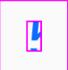

Dynamic Type in UIButtos
Recently I updated my formulary app after three years of absence from the App Store. Now I try to make it the best formulary app in the App Store again. The best formulary app in 2019 needs to support dynamic type.
One of the main features of my formulary app is the calculator. For the update I rewrote the UI from scratch using UIButtons and UIStackViews. For the next update I wanted the calculator to support dynamic type. But the naïve approach didn't work.
The Naïve Approach
UIButton has a UILabel subview to hold the title. To set the font of the button you need to set the font of that label.
let button = UIButton(type: .system)
button.titleLabel?.font = .preferredFont(forTextStyle: .body)
button.titleLabel?.adjustsFontForContentSizeCategory = true
The last line tells UIKit that the font should be changed whenever the user changes the text size in settings or from Control Center. If the font is changed from small to huge while the app is running, the result looks like this (I added a border around the label for clarification):
So this doesn't work.
To make dynamic type work in a UIButton, I needed to add a strange hack to a UIButton subclass.
Custom Subclass
The resizing of the title label works if I use a subclass of UIButton that looks like this:
@implementation CalculatorButton
- (void)traitCollectionDidChange:(UITraitCollection *)previousTraitCollection {
NSString *text = self.currentTitle;
[self setTitle:nil forState:UIControlStateNormal];
[self setTitle:text forState:UIControlStateNormal];
}
@end
If you have any feedback you can find me on Twitter.